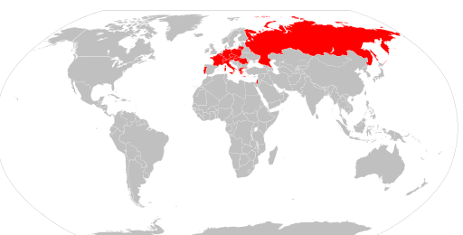
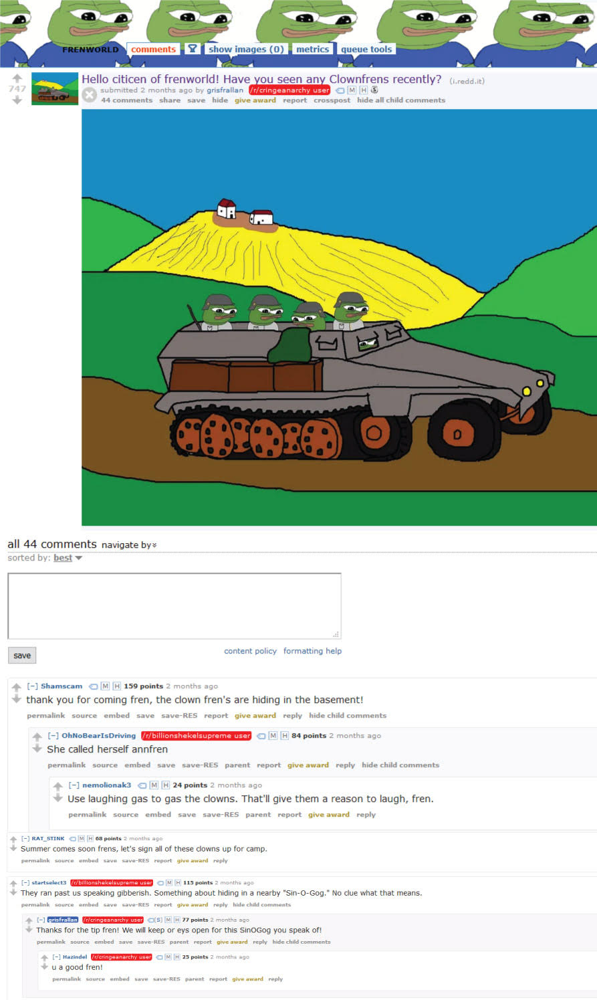
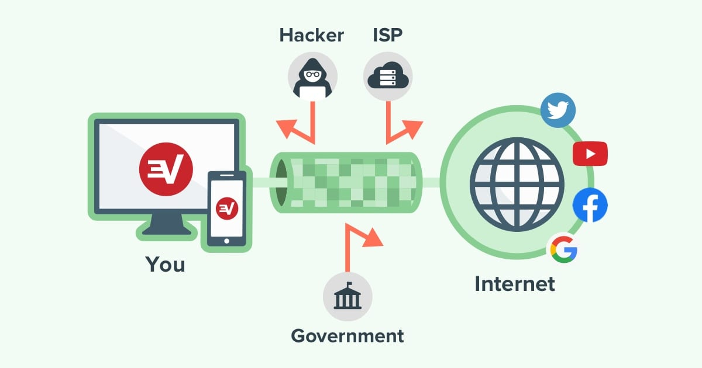

"Las (des)ventajas de ser invisible"
Cómo el anonimato da lugar a discursos de odio e ideologías nazis, 9 de noviembre 2020
Cuando hablo de las desventajas de ser invisible no me refiero a las de uno mismo, todos queremos ser anónimos, ¿cómo podría esto perjudicarnos? Con el título del artículo me refiero a las desventajas de que otros sean anónimos.
Para entrar en contexto, al permitir el anonimato uno abre lugar a que las personas puedan hacer lo que quieran sin miedo ni responsabilidades. Este es el caso de muchos sitios web como Reddit o Discord donde cualquiera puede hacerse una cuenta y participar de la comunidad, mostrando nada más que su nombre de usuario. Debido a esto, la discusión de si permitir el anonimato o no, se remonta al debate de si permitir la libertad de expresión en su totalidad.
A primera vista parece no haber mucho debate al respecto, todos simulan ser defensores de la libertad de expresión. Pero esto cambia cuando se tienen en cuenta las ideologías extremas como el nazismo, la derecha alternativa y la supremacía blanca. En Alemania por ejemplo, existen leyes que se aplican para sancionar el nazismo, desde Volksverhetzung (incitación al odio) hasta Verwenden von Kennzeichen verfassungswidriger Organisationen, la ley que sanciona cualquier clase de simbología anticonstitucional. Además, muchos de los países de Europa y algunos más a lo largo del mundo penalizan por ley la negación del holocausto, como lo señala el siguiente mapa.
Llevándolo al extremo, hasta Estados Unidos, “el faro de la Libertad en el mundo”, tiene leyes que prohíben discriminar a alguien por su origen, raza, color, religión, discapacidad o sexo. Uno de los países que más representa la libertad en el mundo, limita la libertad de expresión cuando esta instiga al odio mediante discriminación. Teniendo esto en cuenta es que hay que volver a plantearse si la libertad de expresión es algo que se debería permitir en su máximo esplendor, o si se debería limitar y controlar.
En el artículo sobre Por qué el anonimato es un mito se habla sobre la inexistencia del anonimato. De cómo todos en internet tenemos una IP perfectamente rastreable, pero que la página web a la que te conectas deja de verla en cuanto la cierres el navegador (a menos que la hayan guardado). Debido a esto es que las páginas donde uno es anónimo son pocas, porque hasta Reddit guarda información tuya aunque sea para mostrarte anuncios más específicos. Lo que es más, el poco anonimato que ofrece Reddit ya es suficiente para que agrupaciones extremistas tengan su lugar, por más de que sea ilegal.
Este fue el caso de muchos subreddits (comunidades dentro de Reddit), principalmente r/frenworld el cual era explícitamente anti semita y negaba el holocausto. Como explica Times of Israel, la comunidad tenía 60 000 miembros y había estado vigente por 9 meses, hasta que fue banneado por Reddit en junio de 2019. A continuación hay dos screenshots de la clase de publicaciones que se hacían en el subreddit, utilizando un código vago donde los payasos representan judíos.
Y cosas como esta no se limitan a Reddit. Discord por ejemplo, una app diseñada para gamers para que puedan comunicarse mientras juegan, también fue usada por agrupaciones de extrema derecha incluyendo pro nazis. La aplicación es usada por miles de usuarios de derecha alternativa y pro nazis, como confesó Discord cuando un usuario denunció un servidor llamado 1488 y Discord dijo que tenía más de 1000 servidores con ese nombre (un servidor es como un grupo de WhatsApp donde los integrantes pueden hablar), el cual es un código para estas agrupaciones. 1488 es una combinación, 14 son la cantidad de palabras en el slogan racista “We must secure the existence of our people and a future for white children”, y 88 es código para “Heil Hitler” dado que la H es la octava letra en el abecedario.
La aplicación prometió disolver todos los servidores que promuevan el odio, refiriéndose a la ideología nazi que estaba presente en muchos servidores desde los cuales se organizó el rally de Charlottesville, un movimiento con el fin de unir la derecha en Estados Unidos y acabó con 3 muertes en su lugar. Un año después, Un juez obliga a Discord a entregar datos de usuarios neo-nazis involucrados en Charlottesville, demostrando que si bien los usuarios parecen gozar del anonimato dentro de la plataforma, una orden judicial puede cambiar esto.
Sin embargo, 3 años después de Charlottesville los servidores pro nazi siguen existiendo en la aplicación, y cualquiera puede encontrar los que están en modo público con una simple búsqueda en Google. Esto te llevaría a una lista de todos los servidores con ‘Nazi’ en la descripción, servidores que Discord está fallando en banear (expulsar/disolver). Y si bien es verdad que no todos comparten la ideología y promueven el odio, muchos lo hacen y aprovechan el anonimato dentro de la aplicación para expresar estas ideas.
Habiendo dicho esto es que el debate sobre la libertad de expresión resurge, una vez más. Porque si esto es lo que hacen las personas con una falsa cantidad de anonimato donde un juez ya puede pedir la información de los usuarios, ¿Qué harían si realmente no hubiese consecuencias, si fuese anonimato puro?
Esa “pequeña” duda es lo que impide que hoy en día exista el anonimato a gran escala. Porque si bien es cierto que existe dentro de la deep web, es algo muy difícil de alcanzar y que ningún gobierno quiere permitir. Uno puede intentar ocultar su identidad usando una VPN por ejemplo, pero esto no otorga anonimato al 100% dado que si bien las páginas no te pueden rastrear, las VPN sí pueden hacerlo.
Para los que no saben, alquilar una VPN es pagar un servicio para enmascarar tu IP, en vez de comunicarte directamente con cualquier página web, te comunicas con los servidores de la VPN para que estos se comuniquen con la página. Es imposible no tener una IP, así funciona el internet. Pero de esta manera las páginas nunca ven más que la IP de los servidores de la VPN, en vez de la tuya. Además, las empresas que ofrecen estos servicios encriptan todo el tráfico, de manera que estás a salvo de que te espíen terceros.
Sin embargo, algunas de las empresas que ofrecen este servicio tienen un registro de las actividades que lleva a cabo cada usuario, razón principal por la que no se puede confiar del todo en ellas. Y para los que usan Tor para enmascarar su IP (un navegador que redirige tu tráfico a través de numerosos servidores para ser prácticamente irrastreable), tampoco es una alternativa segura.
No solo el FBI arrestó al fundador de ‘Freedom Hosting’ (un sitio que hosteaba alrededor de la mitad de las páginas en la deep web), demostrando que no es tan secreto como parece serlo, sino que también cualquiera puede tener un servidor Tor. Esto último lleva a que el tráfico pueda verse infectado por intermediarios, como hace Chema Alonso en el video a continuación.
Para los que se ahorraron el video, Chema creó su servidor Tor desde el que modificaba el tráfico, agregando malware en los paquetes. Esto funcionó por unas horas hasta que en Tor se dieron cuenta de lo que sucedía y le cerraron el servidor. Y si bien fueron simplemente algunas horas, es suficiente para infectar tu dispositivo.
Volviendo a la temática del artículo, hoy en día no existe ningún espacio 100% seguro y anónimo para los usuarios, y es probable que nunca lo haga. No solo a las empresas no les conviene el anonimato como se explica en “Por qué el anonimato es un mito” (como ya lo mencioné), sino que en general no le conviene a cualquiera que pueda verse perjudicado por los discursos de odio que crecen en el seno del anonimato. La cantidad de personas que se comportan únicamente por miedo a las consecuencias es sorprendente, y darles un espacio para expresarse sin responsabilidades ni penalizaciones, es una idea que puede tener terribles consecuencias para el resto de nosotros.
Índice
- Home
- Introducción
- Artículos
- Las contraseñas no son débiles, nosotros lo somos
- La verdad sobre los sitios "No seguros"
- Phishing, la verdadera amenaza al navegar por internet
- Man in the Middle y WiFi Pineapples
- "La rebelión de las máquinas" y ataques DDoS
- El anonimato y el negocio de la información
- Ataques de fuerza bruta y los diccionarios de contraseñas
- "Las (des)ventajas de ser invisible"
- El comportamiento humano y el anonimato
- Encuestas
- Conclusión
- Bibliografía